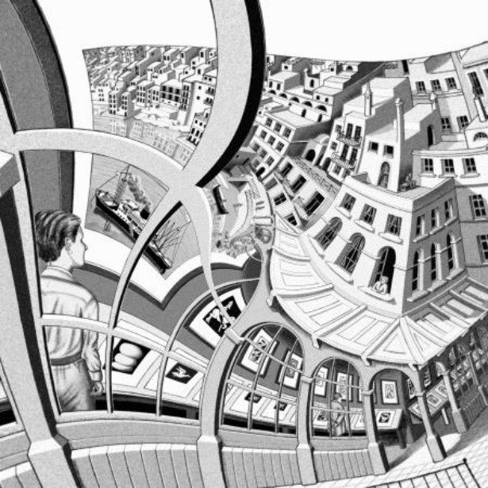
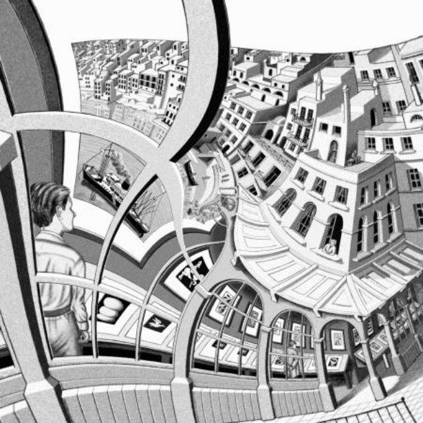

The Spherical Droste Effect
Aaron Montag
Raitenhaslach, Germany
DGD Days 04.10. - 06.10.2017
Spherical Images and Videos
Let \(\mathcal{C}\) be the RGB color space.
Almost universally, spherical images and videos are stored and transmitted via equirectangular projection.
\[c:(0, 2 \pi) \times (-\tfrac{\pi}{2},\tfrac{\pi}{2}) \to \mathcal{C}.\]How to edit these images?
Rotation of an image on vertical axis is simple: shift the image.
Aim 1: How to rotate a spherical image about a non-vertical axis?
Aim 2: Apply other meaningful transformations.
Map the image to \(\hat{\mathbb{C}} \approx \mathbb{C P}^1\)!
(First map the equirectangular projection to \(S^2\) and then map it to \(\mathbb{C} \cup \{\infty \} = \hat{\mathbb{C}}\approx \mathbb{C P}^1\) via the Stereographic projection)
Conformity matters
Lemma: The Stereographic Projection \(SP: S^2 \to \hat{\mathbb{C}}\), \((u,v,w) \mapsto \tfrac{u}{1-w} + i \tfrac{v}{1-w}\) is bi-conformal.
\(\rightarrow\) it is bijective and it and its inverse preserve all angles (and orientation).
Pullbacks of \(f : \hat{\mathbb{C}} \to \hat{\mathbb{C}}\)
Let \(f: \hat{\mathbb{C}} \to \hat{\mathbb{C}}\) be a function.
Then \(d = SP^{-1} \circ f \circ SP: S^2 \to S^2\) is called the pullback of \(f\).
Creating Images: Good images of a pullback are obtained by computing the following map for each pixel:
\[\{1, \dots, 1024\} \times \{1, \dots, 768\} \hookrightarrow \mathbb{C} \hookrightarrow \hat{\mathbb{C}} \to^{f} \hat{\mathbb{C}} \\ \to^{SP^{-1}} S^2 \to (0, 2 \pi) \times (-\tfrac{\pi}{2},\tfrac{\pi}{2}) \to^{c} \mathcal{C}\]
The Droste Effect

Generation of the Droste Effects
Consider the image in polar-like coordinates by taking the \(\log\) of the image.
Replicate the annulus via taking the mod of the real part.
Pull back this change in the modulus by taking the \(\exp\) of the image.
Twisted Droste Effect
 

Eschers Print Gallery https://montaga.github.io/droste/
Twist spherical images!
- Idea: Rotate the replicated \(log\)-deformed image. But how far such that this rotation is compatible with the consecutive \(exp\)-deformation?
- More formal: \(\sim\) is the equivalence relation with \(z \sim w\) if \(z\) and \(w\) show the same part of the image. Have \(z \sim z + 2 \pi i\) and \(z \sim z + p\) (\(p\): period of the repeated \(log\)-deformed image). Which parameter \(\alpha \in \mathbb{C}\) fulfills \(\alpha z \sim \alpha z + 2 \pi i\)?
\(\alpha z \sim \alpha (z + p + 2 \pi i) = \alpha z + \alpha (p+2 \pi i)\). Hence for \(\alpha:=\tfrac{2 \pi i}{p+2 \pi i}\) holds \(\alpha z \sim \alpha z + 2 \pi i\).
Live Demo
Thank you!
References
(Smit and Lenstra 2003) (Montag and Richter-Gebert 2016) (Olsen 2010) (Schleimer and Segerman 2016) (Biederman 1987)
Biederman, Irving. 1987. “Recognition-by-Components: A Theory of Human Image Understanding.” Psychological Review 94 (2). American Psychological Association: 115.
Montag, Aaron, and Jürgen Richter-Gebert. 2016. “CindyGL: Authoring GPU-Based Interactive Mathematical Content.” In International Congress on Mathematical Software, 359–65. Springer.
Olsen, John. 2010. “The Geometry of Möbius Transformations.”
Schleimer, Saul, and Henry Segerman. 2016. “Squares That Look Round: Transforming Spherical Images.” ArXiv Preprint ArXiv:1605.01396.
Smit, Bart de, and Hendrik W Lenstra. 2003. The Mathematical Structure of Escher’s Print Gallery. na.